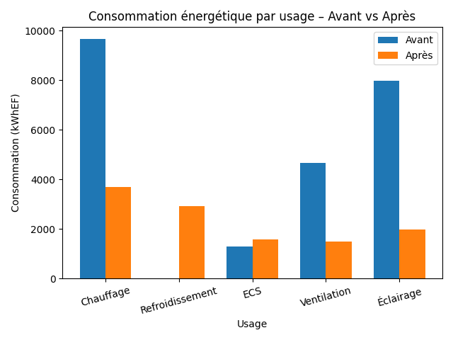

Introduction
Ce projet présente une étude énergétique d'un bâtiment tertiaire de 437,9 m² réalisée dans le cadre du module ENF 119 avec le logiciel Pleiades. L'objectif est d'optimiser les systèmes de chauffage, refroidissement, eau chaude sanitaire, ventilation et éclairage afin de réduire les consommations et les émissions de gaz à effet de serre, avec l'ambition d'atteindre une étiquette énergétique de classe A.
État initial
Surface utile : 437,9 m² — station météo utilisée : Trappes (H1a). La consommation énergétique initiale était de 123,95 kWhEP/m².an et les émissions de GES de 3,83 kgCO₂/m².an. Les consommations finales par usage :
- Chauffage : 9 672 kWhEF
- ECS : 1 281 kWhEF
- Ventilation : 4 676 kWhEF
- Éclairage : 7 968 kWhEF
- Total : 23 600 kWhEF
Améliorations proposées
PAC air/eau réversible
Remplacement du chauffage et de la climatisation par une pompe à chaleur haut rendement.
Chaudière biomasse
Substitution du ballon électrique pour la production d'eau chaude sanitaire.
VMC double flux
Récupération de chaleur et bouches hygroréglables pour limiter les déperditions.
Éclairage LED
Détection de présence et gradation automatique selon l'apport de lumière naturelle.
Photovoltaïque 10,1 kWc
33 modules et onduleur Sunny Mini Central 8000 TL pour l'autoproduction.
Résultats après optimisation
Grâce à ces mesures, la consommation finale a été réduite de 50 %, passant de 23 600 à 11 676 kWhEF, et l'étiquette énergétique atteint le niveau de classe A.

Consommation énergétique avant / après optimisation (kWhEF).
La consommation primaire obtenue est de 56,65 kWhEP/m².an et les émissions de GES sont réduites à 1,60 kgCO₂/m².an.
Documents
Un projet, une méthode
Découvrez mes autres études énergétiques ou échangeons sur votre besoin en alternance.